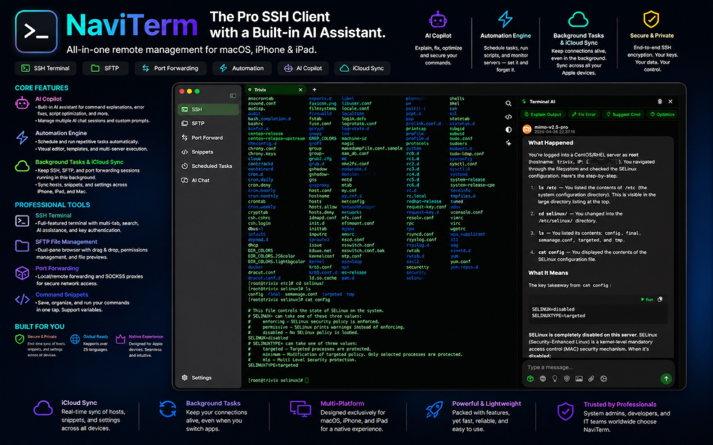
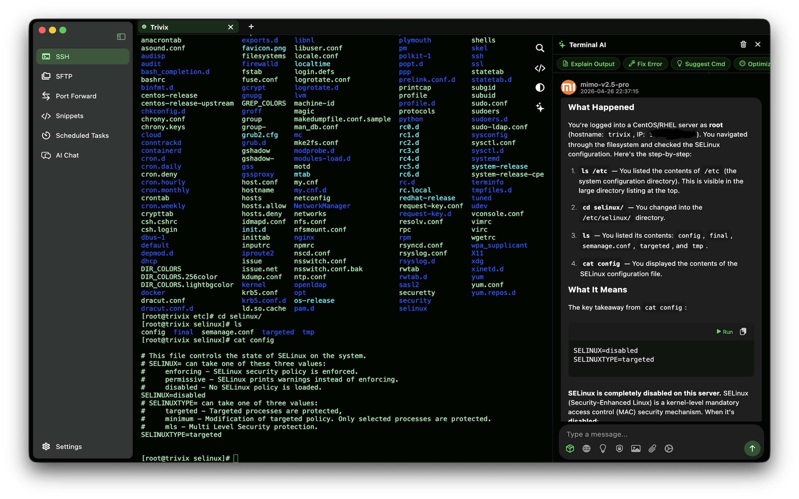
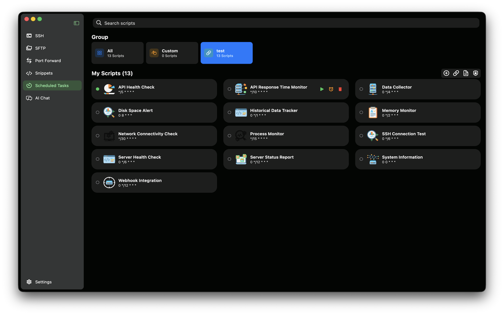
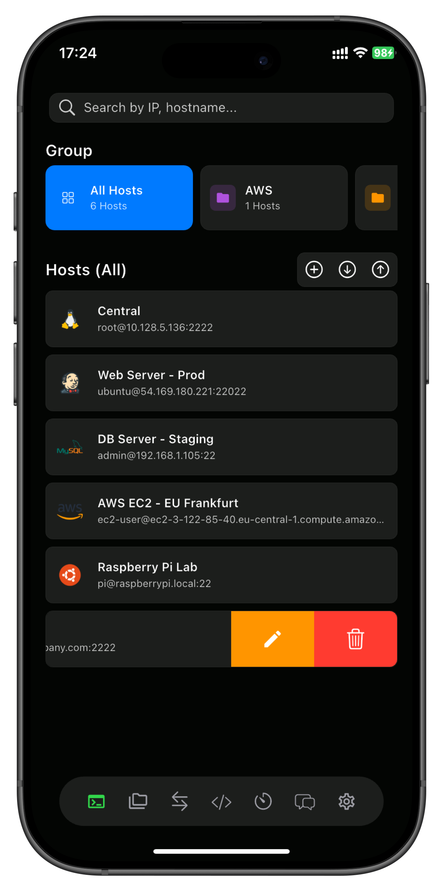
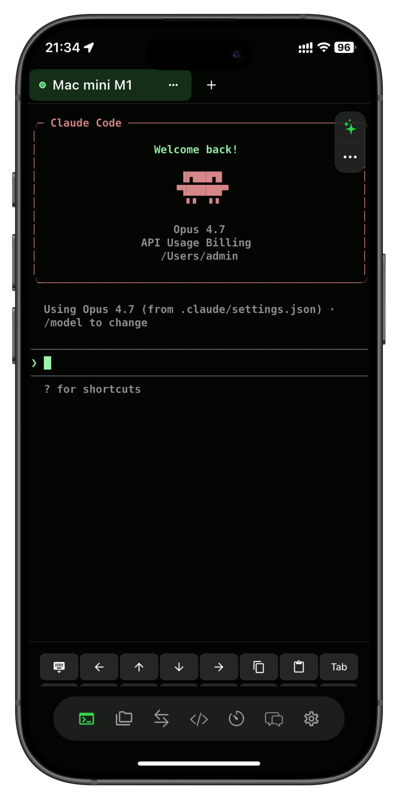
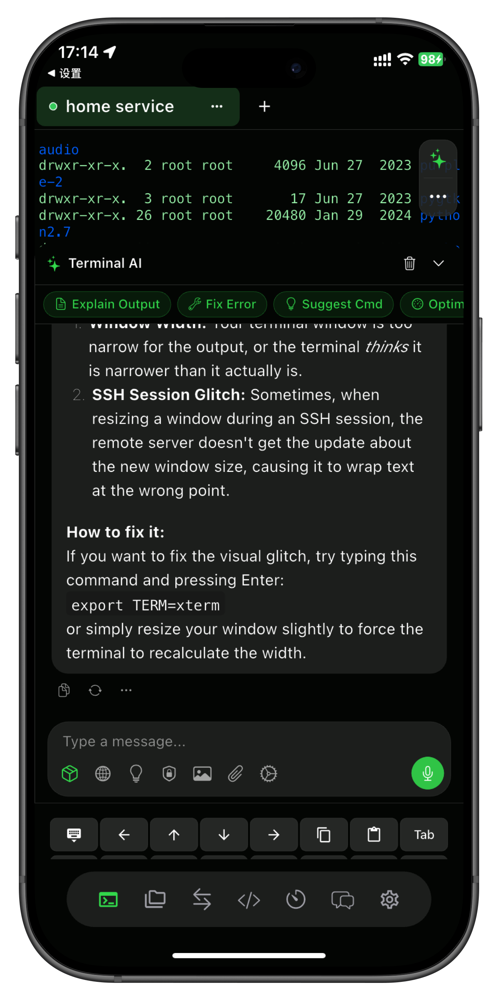
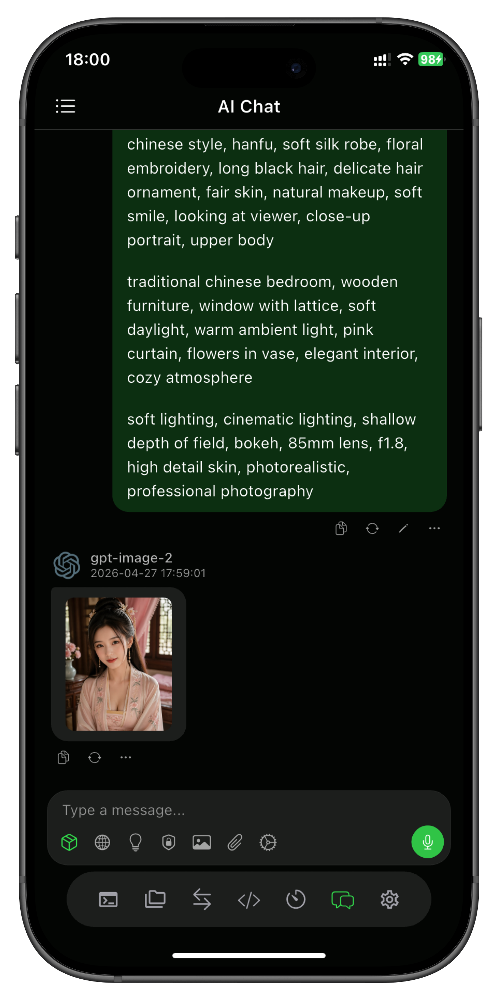
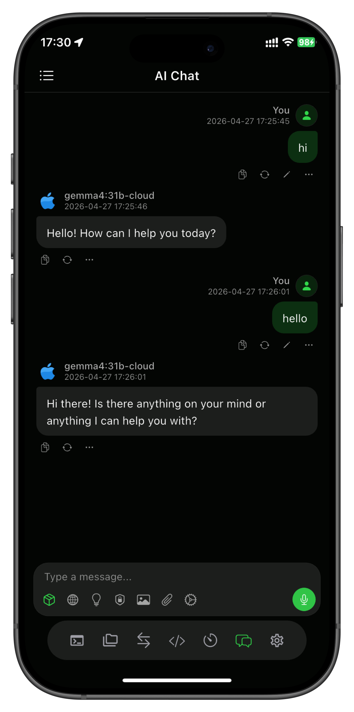
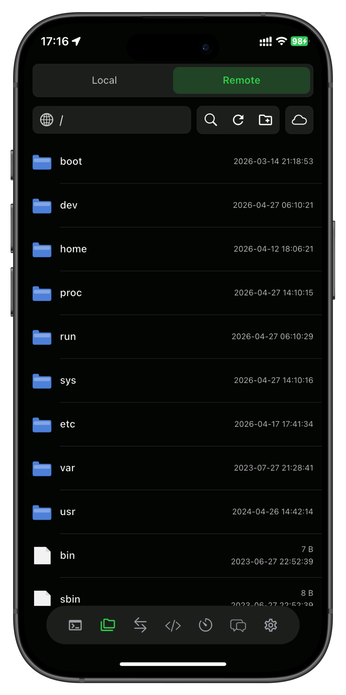

集成 AI 助手的
SSH 客户端
专为 Apple 设备打造
SSH 终端、SFTP、端口转发、自动化任务、AI 助手 — 一款应用搞定 Mac、iPhone 和 iPad 的所有运维需求。免费版永久支持 5 个主机。
支持的协议、标准与 AI 服务
你的终端，
由 AI 加持
AI 助手就在终端旁。一键解释输出、修复错误、优化脚本、安全审计。自带 OpenAI / Claude / Gemini 密钥，按量付费给 AI 服务商。
解释输出
看不懂报错？直接问。NaviTerm 自动把输出发给你选择的 AI。
自动修复
直接给出可执行的解决命令，复制粘贴即可，无需切换应用。
优化脚本
重构 Shell 脚本、生成一行命令、Bash 转 Zsh，几秒搞定。
安全审计
提前发现危险权限、弱加密算法和暴露端口。
502 通常是 nginx 自身可达但上游服务挂了。先运行：
systemctl status php-fpm
如果服务未运行，重启它：
sudo systemctl restart php-fpm
管理服务器
所需的一切
九大专业级工具，集成在一款精美应用中。
SSH 终端
功能完整的终端模拟器，支持多标签、配色方案、自定义字体、搜索高亮。底层基于久经考验的 SSH 协议栈。
- 密码与密钥认证
- 多标签 & 分屏
- 终端内搜索 & AI 辅助
SFTP 文件管理
双窗格浏览器，支持拖放、批量传输队列，预览代码、图片和文档。
端口转发
本地、远程、动态端口转发。通过 SSH 隧道访问内部服务和数据库。
命令片段
保存常用命令，支持变量替换。通过 iCloud 跨设备同步。
分屏
横向或纵向分屏运行多个终端。一边看日志一边改配置。
跳板机
通过一台或多台堡垒机连接目标主机。完美应对多跳网络环境。
SOCKS5 代理
一键启动 SSH 动态代理。任何地方都能访问内网。
密钥管理
生成、导入、管理 SSH 密钥。支持 RSA、ED25519、P256 与加密私钥。
安全设计
密钥仅存本地，端到端 SSH 加密，零数据收集 — 始终如此。
贴合开发者
真实的工作方式
从 iPad 上的早会，到深夜被 iPhone 收到的告警唤醒 — NaviTerm 始终随你在身边。
DevOps & SRE
管理上百台主机，自动化部署，跨集群健康检查 — 让 AI 帮你解读奇怪的内核日志。
后端开发
SSH 进 staging、tail 日志、用 vim 改配置、一键把 Postgres 端口转发回 Mac 调试。
系统管理 & 安全
审计弱加密算法、一键轮换密钥、定时夜间备份、跳板机多跳访问内网零阻力。
值班 & 移动办公
凌晨告警？掏出 iPhone 就能回滚部署、重启服务、grep 1GB 日志 — 不用打开电脑。
原生体验
触手可及
为 macOS、iPadOS 和 iOS 像素级精雕细琢 — 数据同步、操作一致、体验如一，每一台 Apple 设备都熟悉。

macOS 上完整的运维工作台 — 主机侧栏、多标签终端、AI 助手面板，全部并排呈现。

内置 AI 面板
在终端旁与 OpenAI、Claude 或 Gemini 对话，提问、修复、解释 — 无需离开 NaviTerm。

可视化自动化
定时跑脚本、监控服务器、批量部署 — 干净的可视化任务列表，一目了然。






一个应用
所有 Apple 设备
在 Mac、iPhone 和 iPad 之间无缝切换。您的连接始终随身携带。
macOS
原生 Mac 应用，完整支持键盘、Touch Bar 集成和 macOS 快捷键。
支持 Apple SiliconiPad
为 iPad 优化，支持键盘、分屏视图和侧拉多任务。
支持台前调度iPhone
口袋里的完整 SSH 客户端。后台保活、小组件和手势导航。
Face ID / Touch ID
设置好
就放手
定时执行重复性运维任务。可视化编辑器，无需编程基础。内置监控、日志分析、批量部署等模板。
可视化编辑
拖放积木式编辑，无需记语法。
定时调度
按分、按小时、cron 表达式都能跑。
多机并发
同一任务在多台服务器上并发执行。
始终在你身边，
永不掉线
主机、命令片段、配置在所有 Apple 设备间实时同步。SSH 会话后台持续运行 — 切换应用、锁屏都不掉线。
- 主机 & 命令片段实时同步
- SSH/SFTP/端口转发后台保活
- 端到端加密
- 零账号，零服务器
你的密钥，
你的数据，仅此而已。
NaviTerm 以隐私优先为原则构建。所有秘密都留在你的设备里，或通过 Apple 端到端加密的 iCloud 同步。我们没有可被攻破的服务器 — 因为我们根本没有服务器。
-
密钥存于安全飞地
私钥保存在 iOS / macOS 钥匙串 — 由 Face ID、Touch ID 或设备密码保护。
-
Apple 端到端 iCloud
同步基于 CloudKit + 高级数据保护。Apple 看不到你的主机信息，我们更看不到。
-
零遥测
没有分析 SDK，没有会发命令的崩溃报告器，没有"匿名"使用数据。一个都没有。
-
无 NaviTerm 账号
无邮箱、无密码、无个人资料。用 Apple ID 登录即可 — 仅此而已。
使用您的
母语
NaviTerm 支持 25+ 种语言，包括中文、英语、日语、韩语、德语、法语、西班牙语、俄语、阿拉伯语等。
大家如何评价
NaviTerm
"用了 4 年 Termius 才换过来。AI 面板帮我排查问题省下的时间，已经远超买断价。"
"iPhone 后台保活就是杀手锏。在咖啡馆从手机重启了线上服务，电脑还在家里。"
"价格非常实在。$5.99/年无限主机，或 $29.99 终身买断。没有什么"企业版"套路。"
"iCloud 同步开箱即用。Mac 上添加的主机，iPad 上一打开就在。零配置，零账号。"
"AI 用大白话解释了我自己写的 crontab。终于看懂自己的脚本了。"
"在可视化自动化编辑器里搭了个五步部署流水线，没写一行 bash。"
透明定价
没有套路
免费版 5 个主机用着先。需要更多时升级 — 月付、年付省一半，或一次买断终身。
所有价格以美元计价。本地货币与税费以 App Store 实际显示为准。Apple 负责计费与退款 — 我们看不到你的银行卡信息。
为什么开发者选择
NaviTerm
与 Apple 平台主流 SSH 客户端的客观、真实对比。
| 功能 | NaviTerm | Termius | ServerCat |
|---|---|---|---|
| 内置 AI 助手 | |||
| 可视化自动化引擎 | 仅 Pro 版 | ||
| iCloud 同步（无需账号） | 基于账号 | ||
| iOS 后台保活 | |||
| 跳板机 / SOCKS5 代理 | |||
| 原生支持 Mac · iPad · iPhone | |||
| 月付价格 | $0.99 | $9.99 | $1.49 |
| 年付价格 | $5.99 | $89.88 | $14.99 |
| 一次性买断 / 终身版 | $29.99 | ||
| 零数据收集 | 服务端存储 |
* 对比数据基于撰写时公开信息整理。商标归各自所有者所有。
常见
问题解答
NaviTerm 真的免费吗？
是的。免费版支持最多 5 个主机，包含全部核心功能 — SSH、SFTP、端口转发、命令片段，以及自有 AI 密钥接入。Pro 版仅解锁无限主机和离线模式。
Pro 版到底多少钱？
月付 $0.99、年付 $5.99（比月付省 50%），或者 $29.99 一次性买断终身。买断价大约 5 年回本，并包含所有未来更新。
"终身买断"真的是终身吗？
是的 — 一次付款，永远享用 NaviTerm 所有未来版本。绑定的是你的 Apple ID。只要你能从 App Store 重新下载本应用，Pro 功能就一直有效。
我的 SSH 密钥安全吗？
绝对安全。私钥存储在 iOS / macOS Keychain，永远不会离开你的设备。我们零数据收集 — 没有遥测，不分析你的会话。
支持哪些密钥类型？
支持 RSA、ED25519、P256 ECDSA，以及 OpenSSH 格式的加密私钥。同时支持密码认证和键盘交互（2FA）。
跨设备同步怎么工作？
NaviTerm 使用 CloudKit（iCloud）— 数据通过你的 Apple ID 端到端同步。无需 NaviTerm 账号，无 NaviTerm 服务器。可在设置中随时关闭。
后台保活会耗电吗？
我们高效使用 iOS Background Tasks 和 BGProcessingTask API。空闲 SSH 会话耗电极低，相当于一个暂停状态的音乐应用。
可以从 Termius 导入吗？
可以 — 同时支持 Termius 的 JSON 导出和 OpenSSH config 导入。多数用户 5 分钟内完成迁移。
AI 助手要额外付费吗？
不需要。NaviTerm 本身不为 AI 收费。你只需接入自己的 OpenAI / Anthropic / Gemini API Key，直接付费给 AI 服务商 — 一般使用每月仅几毛钱。
支持哪些 AI 服务商？
OpenAI、Anthropic、Google Gemini，以及任何兼容 OpenAI 协议的端点（LocalAI、Groq、DeepSeek、OpenRouter 等）。
加入开发者
一起用 NaviTerm 创造
获取版本更新、分享技巧、与团队交流 — 都在这里。